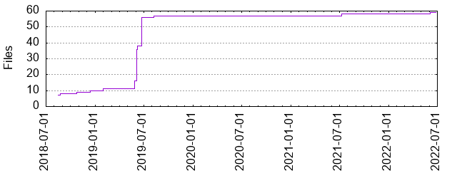

Files
General
Activity
Authors
Files
Lines
Tags
Total files
59
Total lines
9450
Average file size
5225.25 bytes
File count by date

Extensions
Extension
Files (%)
Lines (%)
Lines/file
7 (11.86%)
349 (3.69%)
49
md
9 (15.25%)
5082 (53.78%)
564
py
2 (3.39%)
111 (1.17%)
55
sh
1 (1.69%)
7 (0.07%)
7
star
39 (66.10%)
3892 (41.19%)
99
yml
1 (1.69%)
9 (0.10%)
9